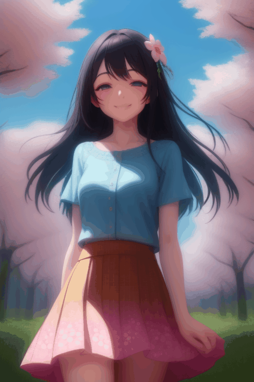

生成完整角色動畫 - 1

使用提示詞:
{
"0": "masterpiece, best quality, Frieren, elven, long white hair, white dress, walking in forest, calm expression, detailed background",
"10": "masterpiece, best quality, Frieren, elven, white dress, walking in forest, searching for magic, curious expression",
"20": "masterpiece, best quality, Frieren, elven, finding something, shiny object in distance, excited eyes, forest path",
"30": "masterpiece, best quality, Frieren, elven, standing in front of a treasure chest, wooden chest, mysterious magic aura",
"40": "masterpiece, best quality, Frieren, elven, opening the treasure chest, lid opening, anticipation, bright light from chest",
"50": "masterpiece, best quality, Frieren, elven, leaning over the treasure chest, looking inside, close up, detailed eyes",
"60": "masterpiece, best quality, Frieren, elven, mimic trap, suddenly biting, mouth of the treasure chest, monster teeth, scary",
"70": "masterpiece, best quality, Frieren, elven, caught in the mimic, head inside the treasure chest, struggling, funny, comical, anime style",
"80": "masterpiece, best quality, Frieren, elven, head stuck in mimic, legs kicking, funny, panic, comedic scene",
"90": "masterpiece, best quality, Frieren, elven, completely swallowed by mimic, only feet visible, treasure chest closed with Frieren inside",
"100": "masterpiece, best quality, Frieren, elven, mimic, treasure chest eating person, comical, Frieren being eaten",
"110": "masterpiece, best quality, Frieren, elven, mimic, treasure chest eating person, comical, Frieren being eaten"
}
|